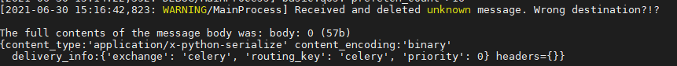

Celery <4.0 Redis未授权访问+Pickle反序列化利用¶
Celery 是一个简单、灵活且可靠的分布式系统，用于处理大量消息，同时为操作提供维护此类系统所需的工具。它是一个专注于实时处理的任务队列，同时也支持任务调度。
在Celery < 4.0版本默认使用Pickle进行任务消息的序列化传递，当所用队列服务（比如Redis、RabbitMQ、RocketMQ等等等）存在未授权访问问题时，可利用Pickle反序列化漏洞执行任意代码。
漏洞环境¶
执行如下命令启动Celery 3.1.23 + Redis：
docker compose up -d
漏洞复现¶
漏洞利用脚本exploit.py仅支持在python3下使用
pip install redis
python exploit.py [主机IP]
查看结果：
docker compose logs celery
可以看到如下任务消息报错：

docker compose exec celery ls -l /tmp
可以看到成功创建了文件celery_success

参考¶
https://docs.celeryproject.org/en/stable/userguide/configuration.html
https://www.bookstack.cn/read/celery-3.1.7-zh/8d5b10e3439dbe1f.md#dhfmrk
https://docs.celeryproject.org/en/stable/userguide/calling.html#serializers
https://www.jianshu.com/p/52552c075bc0
https://www.runoob.com/w3cnote/python-redis-intro.html
https://blog.csdn.net/SKI_12/article/details/85015803